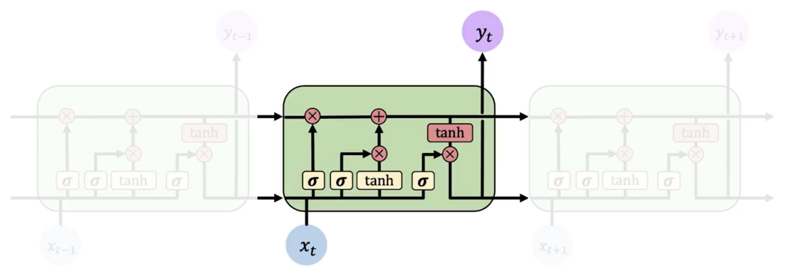
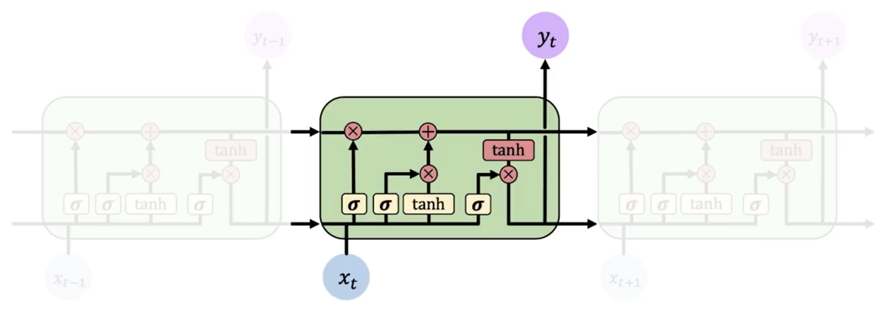
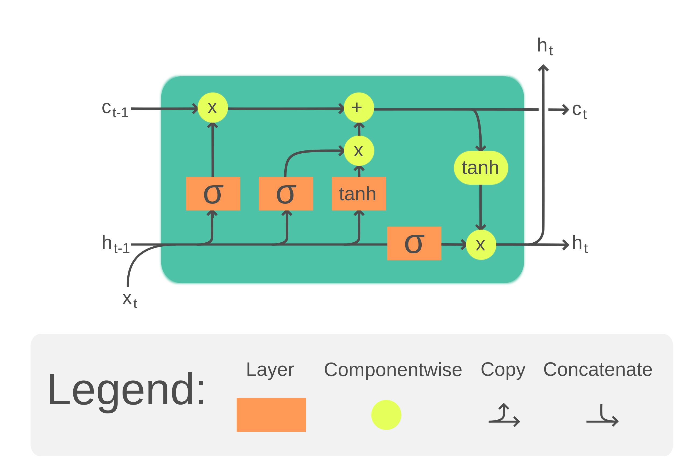

长短时记忆网络 LSTM
LSTM（Long Short-Term Memory）网络是一种特殊的 RNN，它的设计是为了解决 RNN 中的梯度消失和梯度爆炸问题，其还能优化长期依赖的问题。
 

上面两张图分别是 RNN 和 LSTM 的示意图，可以看到 LSTM 的结构更加复杂，引入了更多的元素来控制信息的流动。而更重要的是，其比 RNN 多了一整条信息流（横向）。
模型
LSTM 的结构如下图所示：

相比于 RNN 只使用 用于保存信息流，LSTM 新增了一个 来保存长期信息。
LSTM 的计算总结来说有 4 个不同的状态：遗忘，存储，更新和输出。
遗忘门 Forget Gate

其是为了计算长期记忆 保留多少信息。其计算公式如下：
这个公式的意义是，我们需要计算一个遗忘门 ，其值在 0 到 1 之间，用于控制 保留多少信息。当 接近 0 时，表示忘记所有信息；当 接近 1 时，表示保留所有信息。
记忆门 Store Gate

这一步，LSTM 将计算有多少比例的新信息 要被加入到长期记忆中 。其计算公式如下：
更新 Update

这一步，LSTM 将计算新的长期记忆 。其计算公式如下：
其中 是遗忘门（记忆比例）， 是存储门（存储比例）， 是新的信息。
输出门 Output Gate

输出门 控制着输出 的信息量。其计算公式如下：
和 RNN 类似， 输出为：
训练
LSTM 的训练过程与 RNN 类似，我们可以使用梯度下降法来更新参数。使用 BPTT 算法来计算梯度。LSTM尽管引入了很多新的元素，但这并不影响最终的梯度是连续的，因此我们可以使用梯度下降法来更新参数。